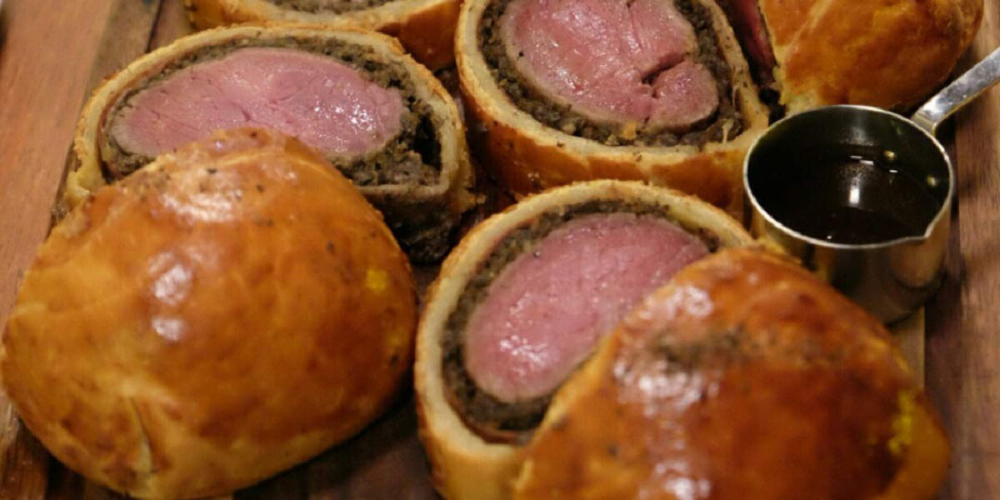

Beef Wellington
Recipe Specification
Ingredients List
| Ingredients | Quantity |
|---|---|
| Fillet of Beef | 1kg |
| Vegetable Oil | 80ml |
| Parma Ham | 1x80g |
| Chestnut Mushrooms | 500g |
| Dried Thyme | ½ tsp |
| Garlic Cloves | 2 Cloves |
| Puff Pastry | 1x320g |
| Salt & Pepper | To Season |
| Thyme | 2 Sprigs |
| Unsalted Butter | 80g |
| Medium Egg | 1x1 |
Yield: 6 portions
Preparation
- Season fillet of beef with salt and pepper.
- Cut mushrooms into quarters.
- Peel and crush garlic cloves.
- Crack and whisk egg.
Cooking Instructions
- Place a large pan over a medium/high heat and add vegetable oil.
- Add butter and thyme sprigs before searing beef fillet. Rotate fillet and Cook for 4 minutes whilst spooning over butter. Ensure an even browning.
- Remove fillet from pan and allow it to cool.
- Place 2 layers of clingfilm on a work surface and use a cloth to remove any air bubbles between the works surface and clingfilm. Apply Parma ham to the top of clingfilm vertically with a height of 2 and a width of 3. Place the fillet of beef on the furthest edge of the Parma ham and carefully roll in Parma ham towards yourself. Once fillet is wrapped in Parma ham, peel clingfilm edge closest to you over the fillet and slowly wrap away from you. Hold excess clingfilm to both side of the fillet and roll against the table to create a tight, perfect cylindrical sausage. Tie off both ends and place in the fridge for a minimum of 3 hours, ideally 24 hours.
- Whilst fillet is in the fridge, place frying pan on a medium/high heat and add 20ml of vegetable oil.
- Add Mushrooms, garlic and thyme before cooking for 5-6 minutes.
- Remove mushrooms from heat, add to a food processor, add 1 tsp of salt and a pinch of pepper before blitzing to create a duxelles.
- Unroll puff pastry and spread mushroom duxelles over 2/3 of surface, ensuring that there is a 1 inch perimeter free from duxelles.
- Remove fillet from clingfilm carefully and gently and place on duxelles.
- Roll puff pastry slowly over fillet with one rotation, egg wash remaining 1/3 of puff pastry and finish folding over. Cut any excess puff pastry from each side of the wellington and fold under.
- Place wellington on a greaseproof papered baking tray.
- Score the top of the pastry with diagonal marks and brush with egg wash all over.
- Leave wellington out for 1 hour so that the meat acclimatises to room temperature. This ensures an even cook.
- Pre-heat oven 190’C.
- Place tray in oven for 40 minutes. Use a meat thermometer to make sure the core temperature is 54’C for a medium-rear wellington.
- Remove from oven and rest for 5 minutes before slicing with a sharp knife.

Serving Suggestions
Serve with fondant potato and spring greens.
Storing instructions
Allow to cool to room temperature. Consume within 4 days of making. Store in the fridge
Reheating Instructions
Place in the microwave for 1-2 minutes.